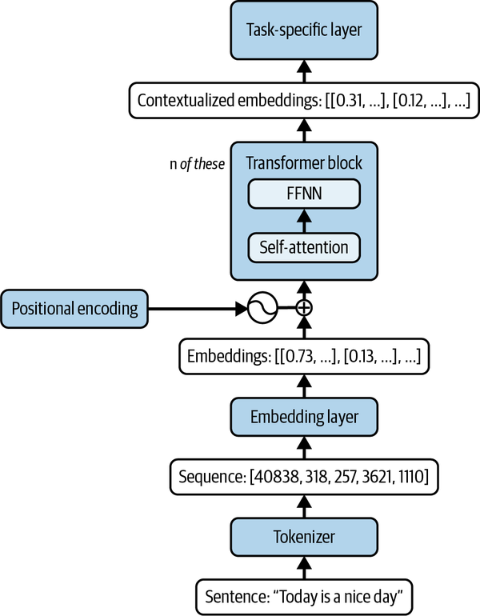
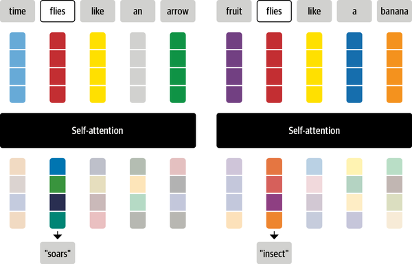

Lecture 3
SPC5004: Tools and Applications of Generative AI
Prof. Anthony E. Phillips
Tuesday, 29 September 2026
Recall the three architecture families from last week:
Encoder-only models like BERT are trained by hiding a token and predicting it from context on both sides.
[{'score': 0.9815664291381836,
'token': 3007,
'token_str': 'capital',
'sequence': 'paris is the capital of france.'},
{'score': 0.0033424885477870703,
'token': 14508,
'token_str': 'birthplace',
'sequence': 'paris is the birthplace of france.'}]Because the model can use words after the gap as well as before it, this task is called masked language modelling (MLM).
Decoder-only models like Qwen — the ones we used last lecture — only ever see what comes before the position they’re predicting.
[{'generated_text': 'Paris is the capital of France and is located in'}]This is causal language modelling (CLM), the context in which we discussed greedy search, sampling, and beam search last week.

Self-attention in the encoder allows ambiguous words to be embedded differently depending on their context:

Tunstall, von Werra, and Wolf, Natural Language Processing with Transformers, revised edition, O’Reilly 2022
Other common examples include pronouns:
The chicken didn’t cross the road because it was too tired.
Here it means chicken and definitely not road.
A single attention computation only learns one way of relating tokens. Multi-head attention runs several of these in parallel.